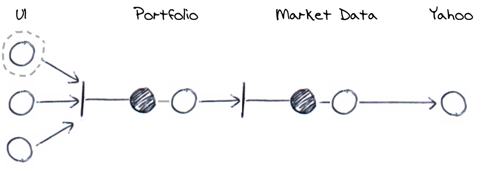

When a user requests the current portfolio value, the system is queried and the current value is displayed appropriately. It's specifically testing the web UI, however, we would like to test the UI without testing the backend.

We can imagine the UI as having it's own port to the Portfolio component. In production, the
specific implementation of it's adapter would use a HTTP GET to call the server. However, in this test, we
can use a test double for the adapter and therefore, just test the port.
The real HTTP adapter uses JavaScript to make the call, so if we can use our own JavaScript substitute, we can exercise the port without making a real HTTP call.
The server responds with a valid valuation
When the user asks for the current portfolio valuation in the UI
The server is asked for the portfolio valuation and that value is displayed on the UI